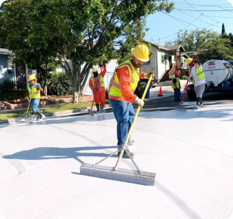

Você sabe oque são as ilhas de calor?
As ilhas de calor são áreas urbanas que experimentam temperaturas significativamente mais altas do que as áreas rurais ao redor, devido à urbanização e à falta de vegetação.
Quais são as causas?
As ilhas de calor são causadas pela absorção de calor por superfícies como concreto e asfalto, além da escassez de áreas verdes e da emissão de calor de veículos e edifícios.
Como combater o efeito?
Nosso objetivo é Criar um sistema automatizado e inteligente que monitore, analise e implemente soluções eficazes para reduzir o impacto das ilhas de calor nas cidades.Usando:
Soluções
1. Plataforma de Monitoramento e Análise de Dados com IA
Sensores IoT coletam dados climáticos em tempo real, analisados por IA para identificar áreas afetadas e prever picos de calor. O sistema ajusta automaticamente o uso de recursos, como irrigação e resfriamento.
2. Infraestrutura Verde Inteligente
Telhados verdes com irrigação automatizada usam sensores de solo e clima. Algoritmos de IA selecionam plantas ideais para otimizar o resfriamento e a eficiência hídrica.

3. Pavimentação Inteligente
Pavimentos termorreguladores refletem a luz solar como em Los Angeles, reduzindo a absorção de calor. Sensores monitoram a temperatura, ajustando materiais conforme necessário, com manutenção automatizada.
É possível a população auxiliar na diminuição desse problema?
A população pode ajudar a diminuir as ilhas de calor! Aqui estão algumas formas de agir:
Plantio de Árvores.
Materiais Refletivos.
Transporte Sustentável.
Conscientização.
As consequências para a população
As consequências das ilhas de calor são locais e globais. Localmente, elas afetam a qualidade de vida, aumentando temperaturas e causando problemas de saúde. Globalmente, contribuem para mudanças climáticase intensificando eventos extremos, como secas e tempestades.
Caso nada seja feito, quais são as possíveis consequências?
Se nada for feito, as possíveis consequências incluem:
Saúde Pública: Aumento de doenças relacionadas ao calor.
Impactos Econômicos: Sobrecarga nas redes elétricas e crises econômicas.